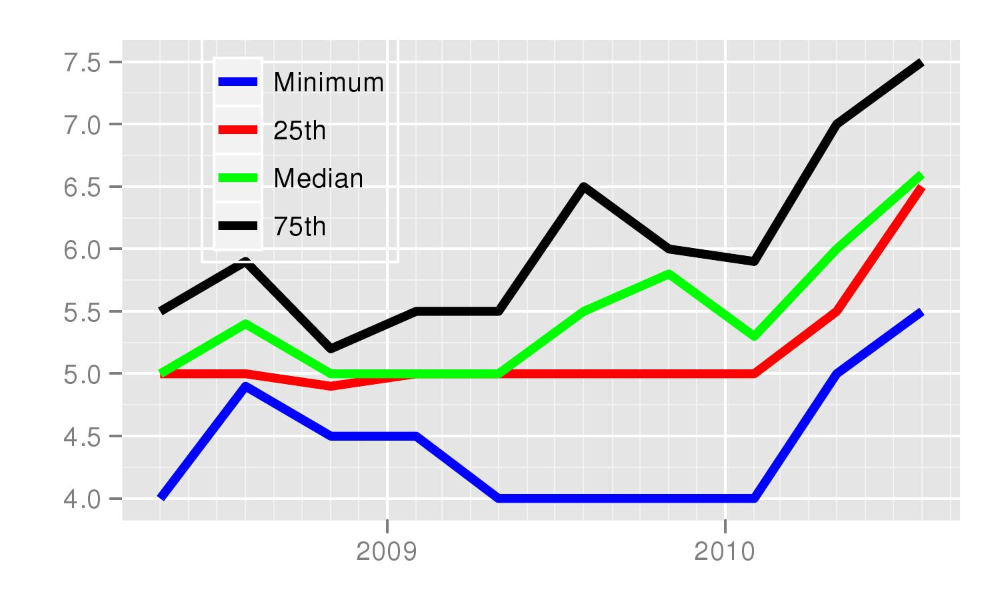
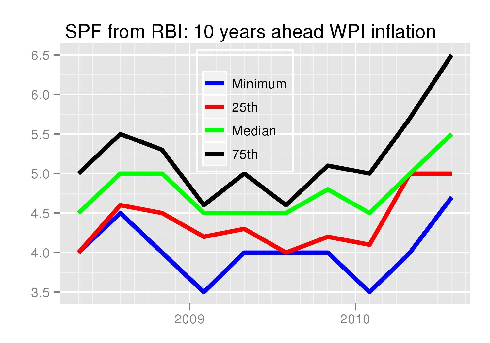

Anchoring expectations
Financial Express, 18 September 2010
Ila Patnaik and Giovanni Veronese
Inflation in recent months in India was primarily due to higher food prices. However, it has crept into higher inflationary expectations. The lack of an explicit inflation targeting framework and of a well specified tolerance range for inflation may exacerbate the effects of temporary supply shocks. The literature argues that the adoption of inflation targets in developed countries improved the anchoring of long run expectations, decoupling them from actual inflation outcomes. Given the size and the persistence of the recent increase in food prices one may then wonder whether long-run inflation expectations have remained stable in India.
Measures of inflation expectations are not readily available and need to be either estimated or directly elicited from private agents using surveys. In many developed countries, the trading of inflation indexed government bonds allows policy makers to monitor so-called break-even inflation rate, extract from financial markets data, as the difference between the redemption yield of an ordinary government bond and the one of inflation-indexed with corresponding maturity. Surveys, by asking people directly their expectations, are the most common source of information for inflation expectations.However, depending on the type of respondents they can present several problems. In particular, while those of professional forecasters are routinely used by Central Banks, gauging inflation expectations from households can be difficult, as the respondent typically form their judgment on a narrow basket of goods and have only a vague idea of the horizon over which to compute the growth rate.
CPI WPI Survey in Mean High Low Mean High Low April-00 6.2 8.0 4.4 6.0 8.0 4.8 April-01 4.9 5.9 3.7 5.5 7.0 4.2 April-02 4.6 6.5 2.5 4.1 5.5 2.0 April-03 5.0 6.2 3.0 4.7 6.0 3.6 April-04 4.6 5.5 3.5 4.9 6.5 3.7 April-05 5.0 5.5 4.5 5.6 6.0 5.0 April-06 4.6 5.5 4.2 5.1 5.6 4.8 April-07 5.4 8.5 4.3 4.9 6.1 4.0 April-08 5.4 6.9 4.5 4.6 6.0 3.5 April-09 5.2 6.6 3.9 4.7 6.0 2.8 April-10 6.1 8.0 4.5 5.6 7.3 4.0 In a recent paper we look at various measures of long run inflation expectations in India obtained from the available surveys of professional forecasters. The first is Consensus Forecasts, the second is the Survey of Professional Forecasters conducted by the Reserve Bank of India since 2008. For the first survey, we focus on next year expected inflation. Given the use of the fiscal year in India (extending from April to March), respondents are asked about their expectations on annual average inflation in a given fiscal year, starting in April of the previous one. For example, they expressed forecasts for fiscal year 2011/12 starting from April 2010.
The table reports the forecasts of next year inflation for both WPI and CPI-IW, surveyed in April of each year. Between April 2009 and April 2010 the entire distribution of the respondents inflations expecations shifted upwards, with the Consensus mean rising by 0.9 percentage points, for the CPI (from 5.2% to 6.1%) and the WPI (from 4.7% to 5.6%).
One may argue that one year ahead expectations are too closely linked to current developments, especially if the degree of persistence inherent in the supply shock is deemed to be high. To address this concern, we exploit the fact that the quarterly RBI survey of professional forecasters also records inflation expectations for five and ten years horizons. We would expect the latter in particular to be unaffacted by current developments and rather closely linked to the communication of the monetary policy strategy.


Surprisingly instead, from the second quarter of 2010 inflationary expectations for both CPI and WPI have crept up, in an unprecedented manner rising by one percentage point. The increase occurred notwithstanding the strong emphasis placed on anchoring expectations in recent official communications by RBI:
"Our commitment in this regard is clearly defined in our own policy documents where we say our objective is to contain perception of inflation in the range of 4.0 to 4.5 per cent in line with the medium-term objective of 3.0 per cent inflation consistent with India's broader integration with the global economy."
(Source: D Subbarao. India and the global financial crisis transcending from re- covery to growth, at the Peterson Institute for International Economics, Washington DC, April 2010)
Indeed, the concern that expectations may have become entrenched and lack anchoring seems to have guided the July 2010 monetary policy statement:
"unwinding of loose monetary policy that started in October 2009 should continue until inflation expectations are firmly anchored and inflation is brought down."
The RBI recently published for the first time the results of its household survey of inflationary expectation, where consumers are asked about the expected level of the inflation rate, up to one year ahead. The time series of the average response shows a clear impact of the food price surge during 2009. This development, per se, does not constitute, a sign of expectations becoming, because of the likely adaptive nature of the expecations formulated by the consumers at such a short horizon. Nonetheless, read together with the previous evidence on longer term expectations from professional forecasters, it reinforces our concerns on the overall anchoring of the expectations in India.
Patnaik is Professor at NIPFP. Veronese works for the Bank of Italy. The views expressed in this article are their own.
Back up to Ila Patnaik's media page
Back up to Ila Patnaik's home page